想必大家对C++ 03中对线程库的标准支持缺失很是烦恼，C++11出现的时间太晚，ZThread是一个跨平台的线程库，可以使用面向对象的线程模型，API接口设计的很像Java，最简单的实现一个线程莫过于下面的代码：
#include <zthread/Runnable.h> #include <zthread/Thread.h> #include <iostream> using namespace std; using namespace ZThread; class TestRun : public Runnable { public: void run() { cout<<"hello world"<<endl; } }; void testfun() { Thread t0(new TestRun()); Thread t1(new TestRun()); } int main(int argc, char* argv[]) { testfun(); return 0; }
从上面可以明显的看出，只要实现一个Runnable的继承类，重新实现Runnable的纯虚函数run方法就可以实现出一个简单的线程类。使用的时候创建线程对象然后把自己实现好的对象指针传入进去即可。这个时候线程就可以正常运行，不过没有对线程异常进行捕捉和处理。
Runnable这个class实现的非常简单，我这里就不详细复述了，他是一个抽象类，实现了一个纯虚函数的接口叫做run，所有的线程处理函数几乎都在这个函数下面大放光彩。
virtual void run() = 0;
ZThread中需要把Runable的对象包装成Task，即任务之说。 Task的实现是一个智能指针，关于ZThread的智能指针，我以后还会详细分析。 Task的实现也非常的简单，重要的是它同时提供了仿函数的接口，即重载了()：
void operator()() { (*this)->run(); }
ThreadOps是对线程的一个封装，我这里详细的分析一下ThreadOps的Win32实现：
dispatch函数是一个static函数，并且声明的时候标明了stdcall，这个是Win API的常见写法，他的作用是给线程分发任务，作为线程的回调函数来使用。
// 线程句柄 HANDLE _hThread; // 线程ID DWORD _tid;
这两个是ThreadOps唯一存在的两个私有的成员属性
返回当前线程对应的ThreadOps对象 代码后面的几个函数例如激活线程对象，判断ThreadOps对象是否对应当前线程，==的重载，优先级读取和设置等等很容易理解，这里就不在说明了。
使用spawn函数创建线程，当然为了保证线程拥有自己独立的全局存储区，Win32下面如果发现可以使用_beginthread和_endthread宏的话，就尽量使用这连个宏来控制线程，_beginthread实际上底层调用的就是CreateThread，但是他给线程封装了更为安全的全局存储区，在你是用一些C语言库函数对一些全局错误标志的修改可以起到一定的保护作用。 在创建线程的时候，传递dispatch的函数指针作为线程的回调函数，同时传递一个Runnable实例化好的指针作为线程函数的参数。
bool ThreadOps::spawn(Runnable* task) { // Start the thread. 创建线程 注意用的是 _beginthreadex 把task作为参数传递进去 #if defined(HAVE_BEGINTHREADEX) _hThread = (HANDLE)::_beginthreadex(0, 0, &_dispatch, task, 0, (unsigned int*)&_tid); #else _hThread = CreateThread(0, 0, (LPTHREAD_START_ROUTINE)&_dispatch, task, 0, (DWORD*)&_tid); #endif return _hThread != NULL; }
线程等待结束使用WaitForSingleObjectEx，使用无限长等待，当等待结束线程句柄被关闭。
bool ThreadOps::join(ThreadOps* ops) { assert(ops); assert(ops->_tid != 0); assert(ops->_hThread != NULL); // 等待线程结束 if(::WaitForSingleObjectEx(ops->_hThread, INFINITE, FALSE) != WAIT_OBJECT_0) return false; ::CloseHandle(ops->_hThread); ops->_hThread = NULL; return true; }
线程让步在Windows下面调用SwitchToThread API进行线程让步，但是SwitchToThread属于Platform API，其代码实现被封装在Kernel32.dll中，所以ZThread使用了YieldOps封装了一个仿函数以供外围接口调用。
class YieldOps { typedef BOOL (*Yield)(void); Yield _fnYield; // yield函数指针 public: YieldOps() : _fnYield(NULL) { OSVERSIONINFO v; v.dwOSVersionInfoSize = sizeof(OSVERSIONINFO); // NT 内核 找到SwitchToThread函数入口 if(::GetVersionEx(&v) && (v.dwPlatformId == VER_PLATFORM_WIN32_NT)) { HINSTANCE hInst = ::GetModuleHandle("Kernel32.dll"); if(hInst != NULL) _fnYield = (Yield)::GetProcAddress(hInst, "SwitchToThread"); // REMIND: possibly need to use _T() macro for these strings } } // 仿函数 括号重载 系统调用失败 尝试用sleep(0)来yield线程 bool operator()() { // Attempt to yield using the best function available if(!_fnYield || !_fnYield()) ::Sleep(0); return true; } };
实际的ThreadOps::yield()只是初始化了一个静态的static YieldOps yielder：
bool ThreadOps::yield() { // 注意是静态的 只初始化了一次 static YieldOps yielder; yielder(); return true; }
dispatch是类的静态成员，是没有this指针的，同时Win回调函数是不能使用class的成员函数的，所以在spawn函数中传递给了线程回调函数一个Runable指针参数，线程函数直接使用暴力强制类型转换得到正确的Runable对象指针 后续就是执行run方法，然后是线程资源回收
// 分配线程任务 线程函数 unsigned int __stdcall ThreadOps::_dispatch(void *arg) { // 参数传递进入 强制类型转化成为线程执行的task Runnable* task = reinterpret_cast<Runnable*>(arg); assert(task); // Run the task from the correct context // 线程处理函数 执行线程run的虚函数 task->run(); // Exit the thread #if defined(HAVE_BEGINTHREADEX) ::_endthreadex(0); #else ExitThread(0); #endif return 0; }
Sublime Text 2是一款现代轻量级跨平台文本编辑器，他配置比较方便（相对于Vim和Emacs而言），可定制性较强，插件丰富，更难能可贵的是快捷键和chrome差不多（Ctrl + N 新建标签页 Ctrl + W 关闭当前标签页 Ctrl + Shift + T 打开上一次关闭的文件）。
主题采用Solarized Dark Color Scheme，侧边栏做过颜色的修饰
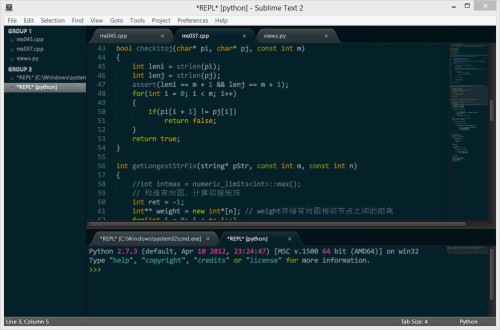
修改此文件%appdata%\Sublime Text 2\Packages\Theme - Default\Default.sublime-theme
有三处地方要修改
{ "class": "sidebar_tree", "row_padding": [8, 3], "indent": 12, "indent_offset": 17, "indent_top_level": false, "layer0.tint": [4, 32, 41], "layer0.opacity": 1.0, "dark_content": false }, { "class": "sidebar_label", "color": [150, 150, 150], "font.bold": false // , "shadow_color": [250, 250, 250], "shadow_offset": [0, 0] }, { "class": "sidebar_container", "layer0.tint": [10, 10, 10], "layer0.opacity": 1.0, "layer0.draw_center": false, "layer0.inner_margin": [0, 0, 1, 0], "content_margin": [0, 0, 1, 0] },
layer0.tint color 是JSON的语法，后面的是RGB颜色值，可以改成你喜欢的颜色，上面的是我自己的配置，效果如下：
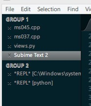
GotoAnything -> Ctrl + P
这时候会出现这样的子窗口：
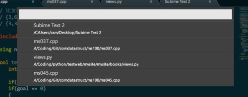
你可以在任何当前打开的文件下面自由切换，使用@ 开头可以在当前文件中的函数切换
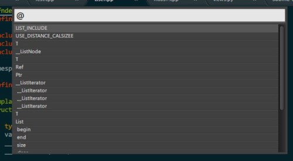
使用# 可开头可以在当前文件中多有的符号中切换，
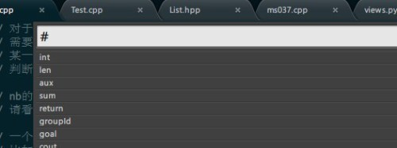
使用: 开头加上行号可以在当前的制定行行号切换
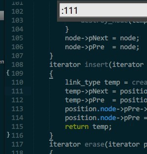
在标签页上看到这种叉叉，意味着当前文件是保存过了的，
,但是这种叉叉
意味着当前文件没有被保存，一旦意外文件关闭会怎么办？是关闭之前弹出提示框？No，直接关闭，下次启动Subime Text会还原出上一次使用该文件时候的状态！
这是一段Python代码，使用Ctrl + ~ 调出console，复制下面的代码回车，然后重启：
import urllib2,os; pf='Package Control.sublime-package'; ipp=sublime.installed_packages_path(); os.makedirs(ipp) if not os.path.exists(ipp) else None; urllib2.install_opener(urllib2.build_opener(urllib2.ProxyHandler())); open(os.path.join(ipp,pf),'wb').write(urllib2.urlopen('http://sublime.wbond.net/'+pf.replace(' ','%20')).read()); print 'Please restart Sublime Text to finish installation'
重启Sublime Text之后，查看Preference菜单之下会有一个Package Control的子菜单
输入Ctrl + Shift + P，你会发现如下的子窗口，编辑器的所有的命令都会出现在在各子窗口里面，这里可以进行模糊匹配，输入install，你会看到如下效果：
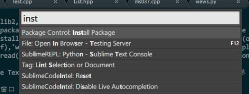
选中Package Control install package这个子命令，Sublime Text会列出所有的可用的插件集合（Github网络上的），你可以选择喜欢的安装。
Git
这个插件在Subime Text里面直接集成git命令，使用的确很方便，使用Ctrl + Shift + P，输入Git之后你就知道该怎么搞了。
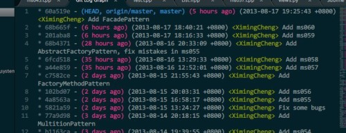
Sublime Code Intel
Python的自动补全很强大
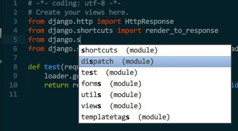
Sublime REPL
可以在Sublime Text里面直接执行脚本
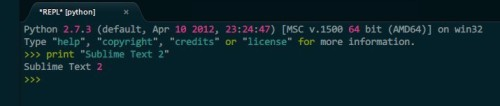
Markdown Preview
直接在浏览器预览Markdown语法的文件
防止绘图的闪烁，终极利器就是使用双缓存来防止闪烁，wxWidgets处理双缓存的类是wxAutoBufferedPaintDC，可以直接处理双缓存而不需要处理太多的问题。
void PicViewCtrl::OnPaint(wxPaintEvent& event) { wxAutoBufferedPaintDC dc(this); PrepareDC(dc); Render(dc); }
此时要注意style的设置：
SetBackgroundStyle(wxBG_STYLE_CUSTOM);
所有的绘图放在Render(dc);里面，这样可以防止绘图闪烁。
另外一种方案是自己处理双缓存的函数：
if(IsDoubleBuffered()) { DrawBackground(dc, xbase, ybase, xbase+virtualwidth, ybase+virtualheight); DrawGrid(dc, xbase, ybase, xbase+virtualwidth, ybase+virtualheight); DrawFocusLine(dc); for(int i = xindexstart; i <= xindexend; i++) for(int j = yindexstart; j <= yindexend; j++) ShowOneCell(dc, i, j); } else { wxMemoryDC mdc; wxBitmap bm = wxBitmap(2*m_iXOffset+m_iCUWidth*m_iWidthPerPixel+30, 2*m_iYOffset+m_iCUHeight*m_iHeightPerPixel+30); mdc.SelectObject(bm); DrawBackground(mdc, xbase, ybase, xbase+virtualwidth, ybase+virtualheight); DrawGrid(mdc, xbase, ybase, xbase+virtualwidth, ybase+virtualheight); DrawFocusLine(mdc); for(int i = xindexstart; i <= xindexend; i++) for(int j = yindexstart; j <= yindexend; j++) ShowOneCell(mdc, i, j); dc.Blit(xbase, ybase, virtualwidth, virtualheight, &mdc, xbase, ybase); }
wxGraphicsContext是高级绘图组建，在windows下面是GDIplus，支持alpha透明色，wxGraphicsContext使用和wxDC很像，但是想要使用他，在WIN32下需要
change the wxWidgets-2.8-12 source code setup.h from：
#ifndef wxUSE_GRAPHICS_CONTEXT #define wxUSE_GRAPHICS_CONTEXT 0 #endif
To
#ifndef wxUSE_GRAPHICS_CONTEXT #define wxUSE_GRAPHICS_CONTEXT 1 #endif
you must set -USE_GDIPLUS=1
wxGraphicsContext的效果：
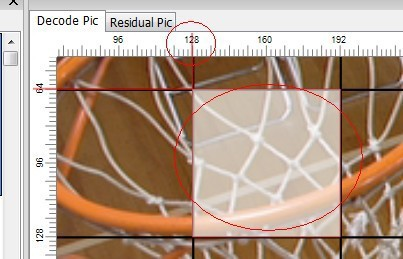
有时候系统提供的组件有可能不够你使用，比如我现在面临的显示YUV图像的控件，目前支持的功能是任意尺寸宏块或者CU的鼠标选定，鼠标拖拽确定范围，始终居中显示图片，鼠标滚轮翻页，ctrl加上滚轮放大或者缩小。
自定义wxControl第一步：
class PicViewCtrl : public wxControl { public: DECLARE_DYNAMIC_CLASS(PicViewCtrl); //…. DECLARE_EVENT_TABLE(); };
显示YUV图像:
void PicViewCtrl::SetBitmap(wxBitmap bitmap) { m_bClearFlag = false; m_cViewBitmap = bitmap; m_CtrlSize.SetWidth(m_dScaleRate*m_cViewBitmap.GetWidth()); m_CtrlSize.SetHeight(m_dScaleRate*m_cViewBitmap.GetHeight()); this->SetSizeHints(m_CtrlSize); GetParent()->FitInside(); Refresh(); }
重写OnPaint和OnEraseBkg
void PicViewCtrl::OnPaint(wxPaintEvent& event) { wxPaintDC dc(this); Render(dc); } void PicViewCtrl::OnEraseBkg(wxEraseEvent& event) { wxClientDC* clientDC = NULL; if (!event.GetDC()) clientDC = new wxClientDC(this); wxDC* pDC = clientDC ? clientDC : event.GetDC(); if(m_bClearFlag) { pDC->Clear(); int w, height; wxSize size = GetClientSize(); wxString s; s.Printf(_T("No picture to show!"), size.x, size.y); pDC->SetFont(*wxNORMAL_FONT); pDC->GetTextExtent(s, &w, &height); height += 3; pDC->SetBrush(*wxTRANSPARENT_BRUSH); pDC->SetPen(*wxLIGHT_GREY_PEN); pDC->DrawLine(0, 0, size.x, size.y); pDC->DrawLine(0, size.y, size.x, 0); pDC->DrawText(s, (size.x-w)/2, ((size.y-(height))/2)); wxBitmap::CleanUpHandlers(); return; } pDC->SetUserScale(m_dScaleRate, m_dScaleRate); if(m_cViewBitmap.IsOk()) pDC->DrawBitmap(m_cViewBitmap, 0, 0, true); if(clientDC) delete clientDC; }
Render负责画出选定的矩形方块
void PicViewCtrl::Render(wxDC& dc) { if(!m_bClearFlag) { dc.SetUserScale(m_dScaleRate, m_dScaleRate); dc.SetBrush(wxBrush(wxColor(255,0,0,128))); dc.DrawRectangle(m_curLCUStart, wxSize(m_curLCUEnd.x - m_curLCUStart.x, m_curLCUEnd.y - m_curLCUStart.y)); } }
在CSDN有关于MFC的两个函数的区别的讨论，现在摘录于下：
在MFC中任何一个window组件的绘图都是放在这两个member function中在设定上 OnEraseBkgnd()是用来画底图的而OnPaint()是用来画主要对象的
具体：http://bbs.csdn.net/topics/320086198
ctrl加上滚轮放大或者缩小是使用了wxDC的SetUserScale，具体实现可以参考github中的HEVCAnalyzer/PicViewCtrl.cpp
鼠标拖拽确定范围参考这里
http://forums.wxwidgets.org/viewtopic.php?t=14575&highlight=onmousemove
最终效果：
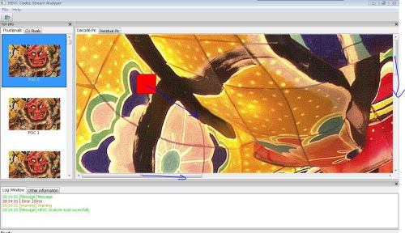
其中的红色块会随着鼠标的移动而移动，默认设置是64x64大小，鼠标朝着蓝色方向拖动，滚轮会自动滚动，ctrl+滚轮放大缩小
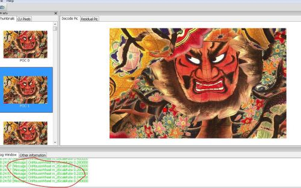
出现的问题：
The background color of the LCU rectangle is solid in Windows(画刷的alpha透明色在WIN32和GTK之下没有效果)，红色矩形应该是半透明的：
Mac下面据说没有此问题，屌丝程序员，没有Mac机器测试。
WIN32后续解决方案：
The brush of the wxWidgets in Windows without GDIPlus enabled will not support the alpha channel, so rebuild the wxWidgets wxMSW with GDIPlus enabled is needed!
很久没有编写GUI程序了，还是在本科的时候经常编写MFC程序，现在觉得作为一个IT人士，必须每隔上一段时间学习新的技术，否则会被淘汰。所以，我看了看wxWidgets这个号称跨平台的GUI库。
主要的目标是实现一个HEVC的码流分析器（HEVCAnalyzer），这是一个长远的目标，估计要花上很长时间才能把功能完善，毕竟是我和一个同学在课余时间开发，而且目前遇到了很多的问题，我把这个星期我这方面遇到的问题总结一下，记录在此。
wxWidgets的使用我就不多说了，我的第一个目标就是编写一个YUV分析器，利用到了wxWidgets的AUI布局，下面是我的一个布局的草图：
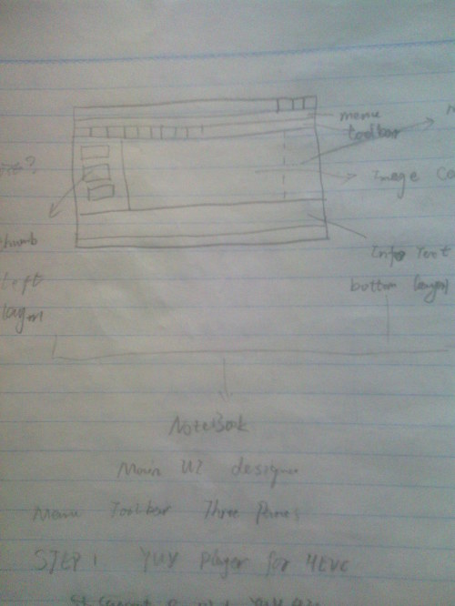
关于AUI布局，他是一个高级的布局管理，其中包含的属性Layers, Rows and Directions, Positions可以控制子窗口的位置，官方给了一个例子，效果如下（个别布局被我修改过）
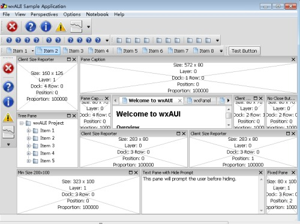
所以我开始给我的项目程序设计了成了这个样子：
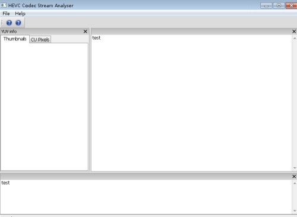
其中左侧是YUV的缩率图列表使用了wxListCrtl，打开之后效果如下：
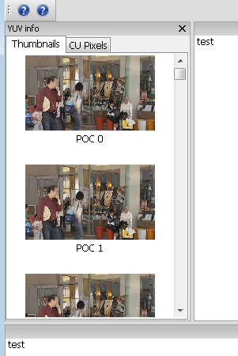
其中这里使用了多线程更新UI，主要是因为如果YUV文件过大，打开处理时间过长，用户会感觉UI被卡死。使用线程控制UI更新，但是线程里面不能直接更新UI，目前是使用自定义消息发给父窗口，父窗口处理列表的更新：
启动线程：
if(m_pImage_list) { delete m_pImage_list; m_pImage_list = NULL; } m_pImage_list = new wxImageList((int)m_iSourceWidth*scaleRate, (int)m_iSourceHeight*scaleRate); m_pThumbnalList->SetImageList(m_pImage_list, wxIMAGE_LIST_NORMAL); m_pThumbThread = new ThumbnailThread(this, m_pImage_list, m_iSourceWidth, m_iSourceHeight, bit, sfile); if(m_pThumbThread->Create() != wxTHREAD_NO_ERROR) { wxLogError(wxT("Can't create the thread!")); delete m_pThumbThread; m_pThumbThread = NULL; } else { if(m_pThumbThread->Run() != wxTHREAD_NO_ERROR) { wxLogError(wxT("Can't create the thread!")); delete m_pThumbThread; m_pThumbThread = NULL; } }
线程中处理YUV to RGB转换：
void* ThumbnailThread::Entry() { m_pImageList->RemoveAll(); TVideoIOYuv cYUVIO; cYUVIO.open((char *)m_sYUVPath.mb_str(wxConvUTF8).data(), false, m_iYUVBit, m_iYUVBit, m_iYUVBit, m_iYUVBit); TComPicYuv* pcPicYuvOrg = new TComPicYuv; pcPicYuvOrg->create( m_iSourceWidth, m_iSourceHeight, 64, 64, 4 ); wxBitmap bmp(m_iSourceWidth, m_iSourceHeight, 24); int frame = 0; while(!cYUVIO.isEof() && !TestDestroy()) { int pad[] = {0, 0}; cYUVIO.read(pcPicYuvOrg, pad); wxNativePixelData img(bmp); wxNativePixelData::Iterator p(img); for(int j = 0; j < m_iSourceHeight; j++) { wxNativePixelData::Iterator rowStart = p; Pel* pY = pcPicYuvOrg->getLumaAddr() + j*pcPicYuvOrg->getStride(); Pel* pU = pcPicYuvOrg->getCbAddr() + (j/2)*pcPicYuvOrg->getCStride(); Pel* pV = pcPicYuvOrg->getCrAddr() + (j/2)*pcPicYuvOrg->getCStride(); for(int i = 0; i < m_iSourceWidth; i++) { // YUV to RBG转换 //此处省略, 具体可以参见Github项目中详细处理 } p = rowStart; p.OffsetY(img, 1); } //bmp.SaveFile(_("test.bmp"), wxBITMAP_TYPE_BMP); wxImage bimg = bmp.ConvertToImage(); double scaleRate = 165.0/m_iSourceWidth; wxImage simg = bimg.Scale((int)m_iSourceWidth*scaleRate, (int)m_iSourceHeight*scaleRate); wxBitmap newbmp(simg); m_pImageList->Add(newbmp); wxCommandEvent event(wxEVT_ADDANIMAGE_THREAD, wxID_ANY); event.SetInt(frame); //m_pFrame->ProcessEvent(event); // this method can be used in Linux wxPostEvent(m_pFrame, event); frame++; } pcPicYuvOrg->destroy(); delete pcPicYuvOrg; pcPicYuvOrg = NULL; wxCommandEvent event(wxEVT_END_THREAD, wxID_ANY); wxPostEvent(m_pFrame, event); return (wxThread::ExitCode)0; }
自定义消息处理函数（父窗口）：
void MainFrame::OnThreadAddImage(wxCommandEvent& event) { int frame = event.GetInt(); // wxString str; // str.Printf(wxT("frame %d added"), frame); // wxMessageBox(str); wxListItem item; item.SetId(frame); wxString text; text.Printf(wxT("POC %d"), frame); item.SetText(text); item.SetImage(frame); m_pThumbnalList->InsertItem(item); }
遇到的问题:
1 Linux的wxThread估计有问题 ，无法启动线程
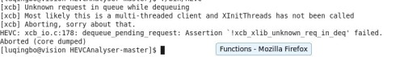
解决方法：
在wxApp的子类的构造函数添加线程初始化函数 XInitThreads();
class HEVCodecApp : public wxApp { public: #if defined(__UNIX__) HEVCodecApp() { XInitThreads(); } #endif bool OnInit(); };
参考 http://forums.wxwidgets.org/viewtopic.php?t=32346&p=139431
2 wxListCtrl在Linux下面显示有问题，无法单列显示列表，这个是wxWidgets 2.8.12的bug，其例子也有这个bug：
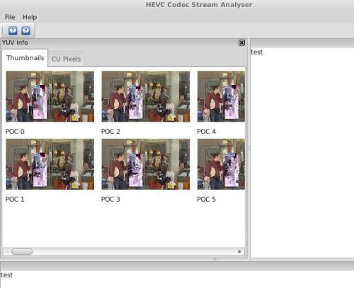
我们打算使用wxHTMLListBox来解决这个bug
HEVC的CU的概念相信每个搞HEVC的童鞋都很清楚，但是怎么才能让HEVC的CU划分更加直观的表现出来呢，每次调试程序我的心中都有着下面这幅图，可是，我想把它直观的表现出来！谁叫咱智商不行，还是个没有用的程序猿，以后也毕不了业，也找不到工作呢！
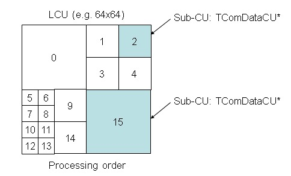
好了，废话不多说，咱们不搞理论的，没有太多废话！基于HM 9.0
要想实际的打出CU划分的最终结果，我想了一个办法，就是修改HEVC的decoder，在CU最终划分的结果的地方把像素换成一个特殊值，比如luma改成0，就变成黑色的了。
怎么改呢，我代码才看了没多久，只好先研究一下decoder：
作为屌丝程序员，上来俺就找decoder的main函数，俺知道main函数里面这句话是关键：
// call decoding function cTAppDecTop.decode();
不多说，进去，在TAppDecTop::decode()函数里面俺知道这一句也是关键：
bNewPicture = m_cTDecTop.decode(nalu, m_iSkipFrame, m_iPOCLastDisplay);
不多说，进去，然后就豁然了一下，下面是一个对nalu.m_nalUnitType switch的语句，是对不同的nal分别解码，我要管的不是pps也不是sps就直接看解码一个slice：
return xDecodeSlice(nalu, iSkipFrame, iPOCLastDisplay);
xDecodeSlice这个函数比较长，不过我就看上了一句话，这个函数的结尾部分：
// Decode a picture m_cGopDecoder.decompressSlice(nalu.m_Bitstream, pcPic);
TDecGop::decompressSlice(TComInputBitstreampcBitstream, TComPic& rpcPic)这个函数俺也就看上一句话：
m_pcSliceDecoder->decompressSlice( pcBitstream, ppcSubstreams, rpcPic, m_pcSbacDecoder, m_pcSbacDecoders);
这个函数很关键，里面有这样的一个大循环：
for( Int iCUAddr = iStartCUAddr; !uiIsLast && iCUAddr < rpcPic->getNumCUsInFrame(); iCUAddr = rpcPic->getPicSym()->xCalculateNxtCUAddr(iCUAddr) ) {/*循环里面的代码*/}
看到这个地方你想到了啥呢，没错，这是对LCU一个个循环的地方，在这个循环里面调用了m_pcCuDecoder->decodeCU( pcCU, uiIsLast ); decodeCU就是对一个LCU进行解码，到decodeCU里面看一看，发现他调用了xDecodeCU，而xDecodeCU是一个递归函数，是分别解码各个最终划分的CU，xDecodeCU里面有一个是否要一分为四的判断：
if( ( ( uiDepth < pcCU->getDepth( uiAbsPartIdx ) ) && ( uiDepth < g_uiMaxCUDepth - g_uiAddCUDepth ) ) || bBoundary )
如果条件不满足，不就说明到达最终的CU的划分的地方了吗，好，在if出来的地方填上这样的一句话：
std::cout<<"uiLPelX uiTPelY uiRPelX uiBPelY "<<uiLPelX<<" "<<uiTPelY<<" "<<uiRPelX<<" "<<uiBPelY<<std::endl;
运行解码器，解码一个I帧，输出的部分结果如下：
uiLPelX uiTPelY uiRPelX uiBPelY 0 0 15 15 uiLPelX uiTPelY uiRPelX uiBPelY 16 0 31 15 uiLPelX uiTPelY uiRPelX uiBPelY 0 16 15 31 uiLPelX uiTPelY uiRPelX uiBPelY 16 16 31 31 uiLPelX uiTPelY uiRPelX uiBPelY 32 0 63 31 uiLPelX uiTPelY uiRPelX uiBPelY 0 32 15 47 uiLPelX uiTPelY uiRPelX uiBPelY 16 32 31 47 uiLPelX uiTPelY uiRPelX uiBPelY 0 48 15 63 uiLPelX uiTPelY uiRPelX uiBPelY 16 48 31 63 uiLPelX uiTPelY uiRPelX uiBPelY 32 32 63 63
可以明显看出这一个CU的划分是如下结果：
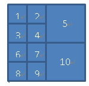
于是我就想个办法把每个小块的的两个坐标点存下来不就好了吗，于是在typedef.h我添加了如下代码：
//cheng struct PtPair { UInt _pt1x; UInt _pt1y; UInt _pt2x; UInt _pt2y; };
定义一个struct，保存一组坐标。在class TDecSlice里面添加一个私有成员：
std::vector<PtPair> m_listLastCU
用来保存一个slice里面所有的最终CU的划分结果
修改TDecCu::decodeCU的函数参数，把在class TDecSlice里面的m_listLastCU传递过去：
Void TDecCu::decodeCU( TComDataCU* pcCU, UInt& ruiIsLast, std::vector<PtPair>& list )
调用改为：
m_pcCuDecoder->decodeCU ( pcCU, uiIsLast, m_listLastCU );
classTDecCu也添加一个私有成员用来保存class TDecSlice传递过来的vector的指针：
std::vector<PtPair>* m_plistPt;
Void TDecCu::decodeCU( TComDataCU* pcCU,UInt& ruiIsLast, std::vector
m_plistPt = &list;
decodeCU函数变成如下结果：
Void TDecCu::decodeCU( TComDataCU* pcCU, UInt& ruiIsLast, std::vector<PtPair>& list ) { //cheng m_plistPt = &list; // if ( pcCU->getSlice()->getPPS()->getUseDQP() ) { setdQPFlag(true); } #if !REMOVE_BURST_IPCM pcCU->setNumSucIPCM(0); #endif // start from the top level CU xDecodeCU( pcCU, 0, 0, ruiIsLast); }
在TDecCu::xDecodeCU( TComDataCU* pcCU, UInt uiAbsPartIdx, UIntuiDepth, UInt& ruiIsLast)这个函数里面的打印坐标信息的那一句话后面添加上：
pt._pt1x = uiLPelX; pt._pt1y = uiTPelY; pt._pt2x = uiRPelX; pt._pt2y = uiBPelY; m_plistPt->push_back(pt);
这样的话，解码完一帧，m_listLastCU里面就保存了CU最终划分的结果。
TDecSlice::decompressSlice开头需要把vector清空以便于在解码下一帧的时候vector中的信息要重新记录
m_listLastCU.clear();
最后在TDecSlice::decompressSlice的LCU的for循环的后面添加绘制CU最终边框的代码：
Pel* pY = rpcPic->getPicYuvRec()->getLumaAddr(); UInt stride = rpcPic->getPicYuvRec()->getStride(); for(UInt index = 0; index < m_listLastCU.size(); index++) { for(UInt y = m_listLastCU[index]._pt1y; y <= m_listLastCU[index]._pt2y; y++) { for(UInt x = m_listLastCU[index]._pt1x; x <= m_listLastCU[index]._pt2x; x++) { if(y == m_listLastCU[index]._pt1y /*|| y == m_listSCU[index]._pt2y*/) pY[y*stride + x] = 0; if(x == m_listLastCU[index]._pt1x /*|| x == m_listSCU[index]._pt2x*/) pY[y*stride + x] = 0; } } }
解码一帧图像使用YUV播放器查看效果：
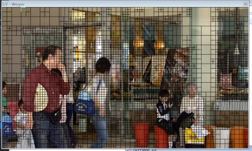
怎么办呢，在TDecSlice::decompressSlice函数里面添加一个类似的vector记录一下LCU，在class TDecSlice里面再添加一个私有成员std::vector
在LCU的大大的for循环里面添加代码记录LCU划分的信息：
UInt xpel = pcCU->getCUPelX(); UInt ypel = pcCU->getCUPelY(); UInt width = pcCU->getWidth(0); UInt height = pcCU->getHeight(0); //std::cout<<"xpel :"<<xpel<<"ypel :"<<ypel<<"width : "<<width<<"height :"<<height<<std::endl; PtPair pt; pt._pt1x = xpel; pt._pt1y = ypel; pt._pt2x = xpel + width; pt._pt2y = ypel + height; m_listLCU.push_back(pt);
然后在刚才的画黑框的代码后面添加LCU的画白框的代码：
for(UInt index = 0; index < m_listLCU.size(); index++) { for(UInt y = m_listLCU[index]._pt1y; y <= m_listLCU[index]._pt2y; y++) { for(UInt x = m_listLCU[index]._pt1x; x <= m_listLCU[index]._pt2x; x++) { if(y == m_listLCU[index]._pt1y /*|| y == m_listLCU[index]._pt2y*/) pY[y*stride + x] = 255; if(x == m_listLCU[index]._pt1x /*|| x == m_listLCU[index]._pt2x*/) pY[y*stride + x] = 255; } } }
运行解码器再试一下：
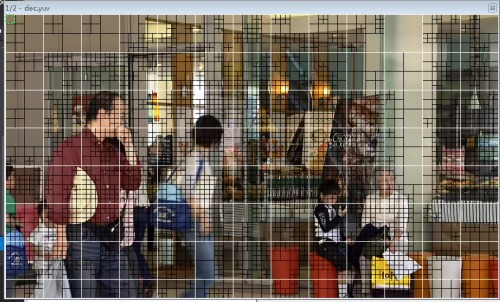
你可以很明显的看到LCU的大白色块！哈哈！
后面其实你可以发现：
和这个一模一样
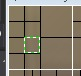
注：以上画框的结果只能适用于I帧，对于P/B帧，由于解码我修改重建值也就修改了了P/B参考帧的像素值，导致P/B帧画框会出现一定混乱，不过对于P/B帧，vector里面存放的数据应该是对的！
在这个快节奏的环境下，男人怕泄，女人怕漏。一个C/C++程序猿怕啥呢——泄露。下面是我从别的地方摘录的一段[1]。
“C/C++编译的程序的内存分配分为以下几个部分：栈区（stack）——由编译器自动分配释放，存放函数的参数值，局部变量的值等。其操作方式类似于数据结构中的栈。堆区（heap）——一般由程序员分配释放，若程序员不释放，程序结束时可能由OS回收。注意它与数据结构中的堆是两回事，分配方式倒是类似于链表。全局区（静态区）（static）——全局变量和静态变量的存储是放在一块的，初始化的全局变量和静态变量在一块区域，未初始化的全局变量和未初始化的静态变量在相邻的另一块区域。程序结束后由系统释放。文字常量区——常量字符串就是放在这里的，程序结束后由系统释放。程序代码区——存放函数体的二进制代码。”
Memory Leak中文翻译为内存泄露，这是一个令人头疼的话题，因为由程序猿手动动态分配的内存一般都在heap上，这个蛋疼的东西总困扰着C/C++程序猿，如果不手动释放该内存，在程序退出之前，这一块内存是不会被释放的。
有人这时候就站出来了，你怎么能这么懒呢，用完释放不就得了吗。我只能说，“猿”非圣贤，咋就不能有个疏忽的地方呢。一旦疏忽就悲剧了，代码逻辑简单的还好，一旦复杂起来，恐怕只有上帝才知道是哪个地方泄露了。都这样了，当然咱们不多说废话了，我来介绍两个专搞内存泄露的工具。
Windows工具——VisualLeak Detector(VLD)，这货是用在Visual Studio上面的，至于如果你使用MingW之类的我还木有研究过。官方网站是：VisualLeak Detector(VLD)
下载下来，安装，把安装目录下面的src目录添加到VisualStudio的include path里面，把lib目录添加到Visual Studio的lib path里面，注意有lib目录有两个分别代表的是x86和x64，这要根据你的工程的配置来选择使用哪一个。好了一切就绪了，我们试一把。
首先编写一个非常简单的泄露程序，虽然我在一些面试题目上面看到说这个不算内存泄露。
#include <iostream> int main(int argc, char** argv) { int *p = new int[10]; return 0; }
使用F5直接调试运行一下，观察output的最后一段：
WARNING: Visual Leak Detector detected memory leaks! ---------- Block 1 at 0x00379580: 40 bytes ---------- Call Stack: e:\projects\leak\leak\source.cpp (6): leak.exe!main + 0x7 bytes f:\dd\vctools\crt_bld\self_x86\crt\src\crtexe.c (536): leak.exe!__tmainCRTStartup + 0x19 bytes f:\dd\vctools\crt_bld\self_x86\crt\src\crtexe.c (377): leak.exe!mainCRTStartup 0x765CED6C (File and line number not available): kernel32.dll!BaseThreadInitThunk + 0x12 bytes 0x77B8377B (File and line number not available): ntdll.dll!RtlInitializeExceptionChain + 0xEF bytes 0x77B8374E (File and line number not available): ntdll.dll!RtlInitializeExceptionChain + 0xC2 bytes Data: CD CD CD CD CD CD CD CD CD CD CD CD CD CD CD CD ........ ........ CD CD CD CD CD CD CD CD CD CD CD CD CD CD CD CD ........ ........ CD CD CD CD CD CD CD CD ........ ........ Visual Leak Detector detected 1 memory leak (76 bytes). Largest number used: 76 bytes. Total allocations: 76 bytes. Visual Leak Detector is now exiting. The program '[7652] leak.exe' has exited with code 0 (0x0).
这里就很明白了把，这个vld工具可以打印出泄露调用的堆栈，双击任意错误处，可以到达错误的地方，e:\projects\leak\leak\source.cpp (6): leak.exe!main + 0x7 bytes双击这句话就定位到了main函数的第六行。哈哈，很方便吧！
使用Linux的童鞋要鄙视我们了，人家都是命令行的高手，不屑于使用GUI工具，再说也木有Visual Studio，Vim Emacs之类的利器可以秒杀Visual Studio。这时候如何定位泄露的地方呢？现在推出终极杀人魔——valgrind。官网：valgrind
使用debian和ubuntu的童鞋可以使用apt-get命令安装此软件。
首先使用gcc的童鞋首先编译的时候加上-g的debug选项，优化最好是使用-o0，然后如果你的程序运行是使用如下的参数方式：
myprog arg1 arg2
现在就改成下面的方式：
valgrind--leak-check=yes myprog arg1 arg2
等到程序结束的时候就可以看到泄露的地方啦。（本人Linux菜鸟，没法给大家演示了，不然又要重启进入Linux或者打开卡卡的虚拟机）
哈哈，到这里了，泄露还是否那么可怕呢。我给大家一张恐怖的泄露截图吧，以供娱乐：
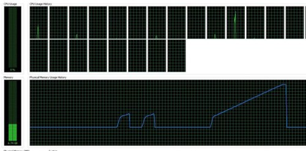
参考资料：
[1] http://bbs.csdn.net/topics/390050717
[2] http://vld.codeplex.com/documentation
[3] http://www.valgrind.org/docs/manual/quick-start.html#quick-start.mcrun